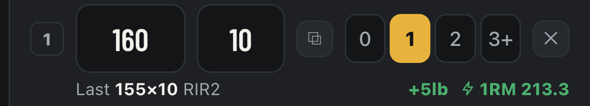
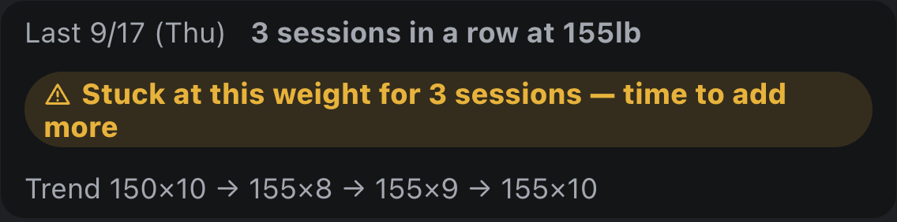
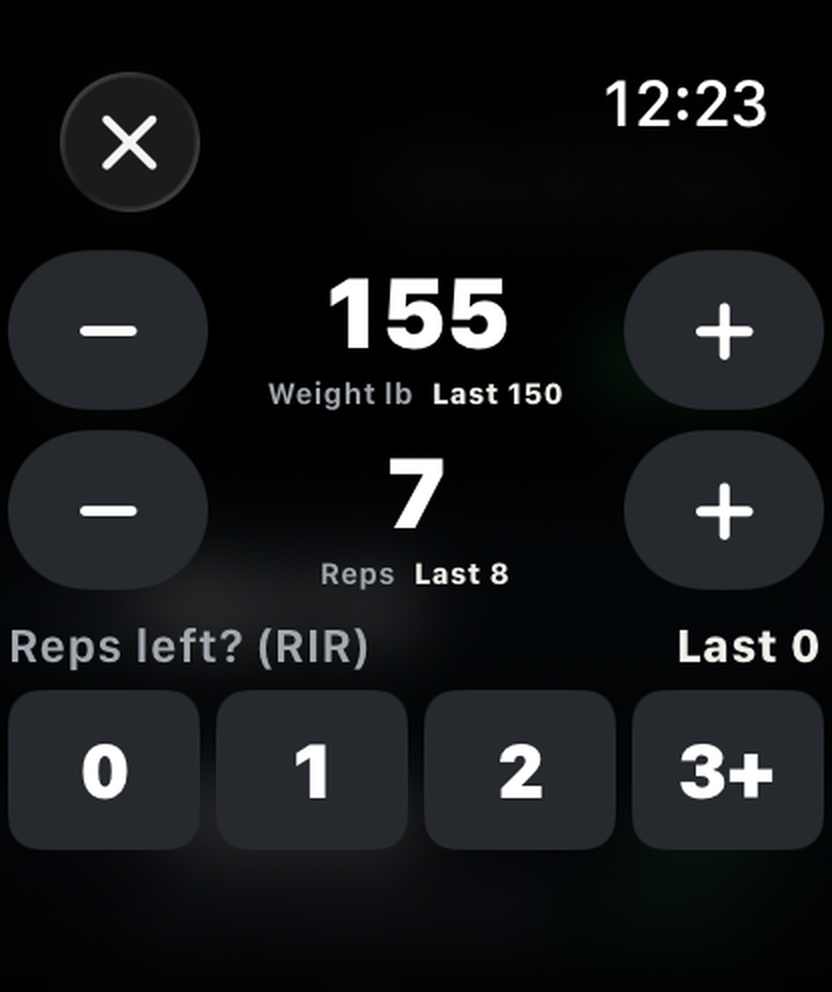
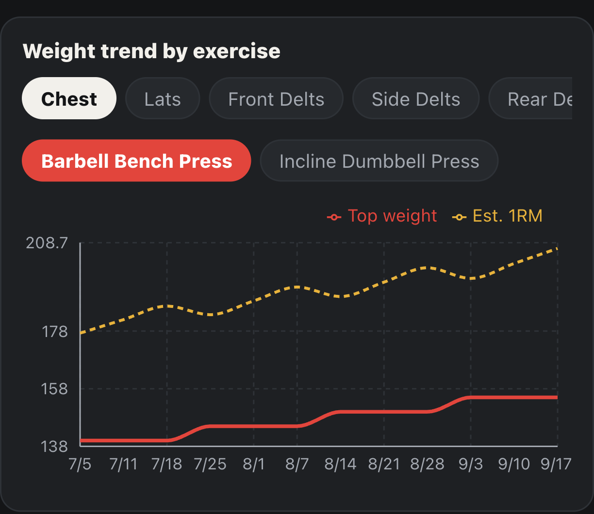
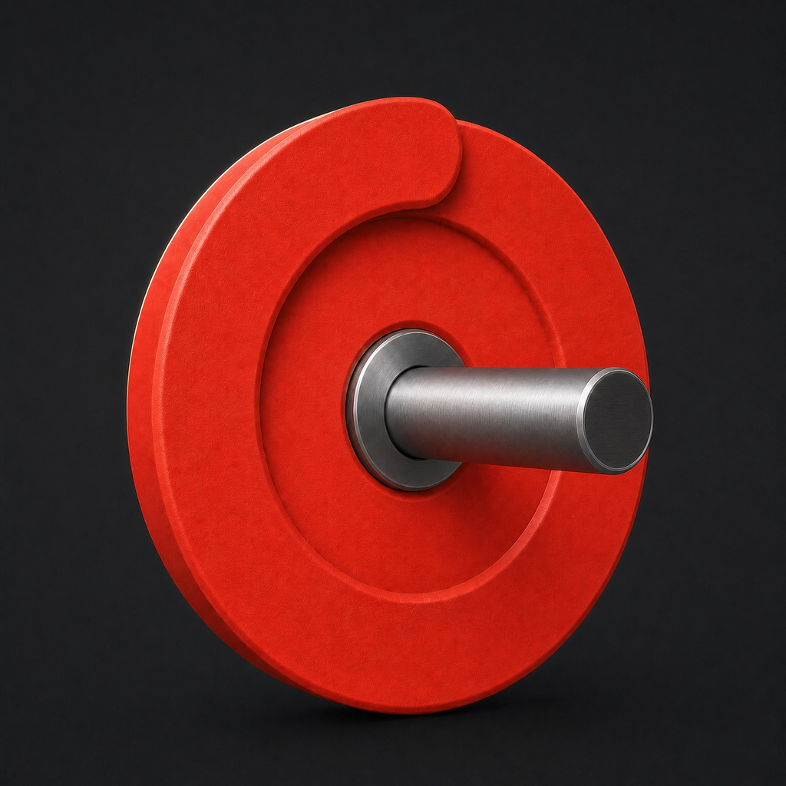

Whether to go up is your call.

Your log just shows
the facts.
Just tap −/+ on Apple Watch.
It syncs to your iPhone log.

Progressive overload

One-time purchase
No subscription · No sign-up

Link in bio